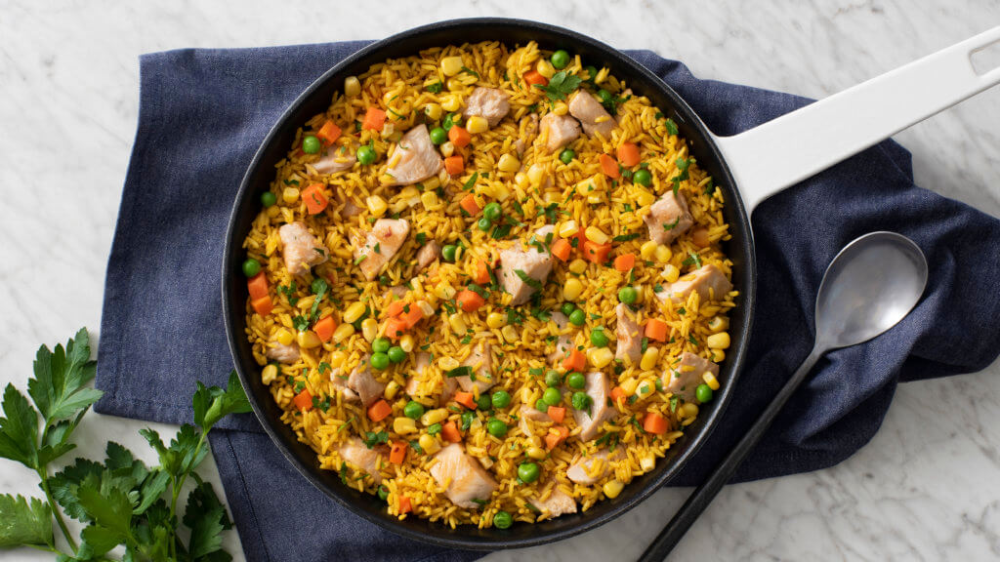

Arroz con pollo

Sink your teeth into this arroz con pollo recipe.
Arroz con pollo means "rice with chicken" in Spanish. It is a classic dish of Spain and Latin America,
with many different traditional ways to prepare it, unique to various countries.
Ingredients
- 2 teaspoons salt
- 1 teaspoon garlic powder
- 1/2 teaspoon dried cumin
- 1/4 teaspoon black pepper
- 1/4 teaspoon cayenne pepper
- One 3 1/2-to-4 pound chicken
, cut into 8 serving pieces and skin removed
- 3 tablespoons vegetable oil
- 1 small yellow onion finely diced
- 1 green bell pepper, diced
- 1 red bell pepper, diced
- 1 1/2 teaspoons salt
- 1 1/2 cups long-grain rice
- 2 cloves garlic, finely diced
- 1 1/2 cups low-salt chicken stock
- 1/2 cup tomato sauce
Instructions
- Combine the salt, garlic powder, cumin, black pepper and cayenne in a plastic gallon bag. Shake until the mixture is well combined.
- Pat the chicken dry and place in the bag with the spice mixture. Shake the bag, making sure the chicken is well coated.
- Heat the oil in a 12-inch high-sided skillet over high heat until hot but not smoking. Add the chicken and brown on all sides,
about 6 minutes each side. Transfer the chicken to a plate, using tongs.
- Add the onions, green peppers, red peppers and 1/2 teaspoon salt to the skillet. Cook the vegetables over moderate heat, stirring,
until softened and fragrant, about 7 minutes. Add the rice and garlic and cook until the rice begins to turn gold in color and fragrant, about 1 minute.
- Meanwhile, combine the stock, tomato sauce and remaining teaspoon salt in a medium bowl. Add 1 1/4 cups water and the stock mixture
to the skillet and stir to make sure the rice is covered in liquid. Nestle the chicken in the rice, adding any juices from the plate.
Bring the rice to a boil. Reduce the heat to medium-low and cover. Cook until the chicken is cooked through, the rice is tender and
most of the liquid is absorbed, about 35 minutes. Let the skillet stand covered, about 10 minutes before serving.
Return to top
Return to main page